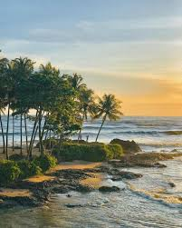

Places to visit
Kozhikode Beach

Kozhikode Beach is a historic, popular coastal destination on Kerala’s Malabar Coast known for its scenic sunsets, golden sands, and vibrant local culture. Located in the heart of the city, it features century-old piers, a lighthouse, and is famous for seafood delicacies like kallumakkaya.
Get Location📍
Mananchira

A cultural and historical landmark featuring a man-made lake, traditional architecture, and recreational spaces, reflecting the legacy of Kozhikode’s Zamorin era.
Get Location📍
Sarovaram Bio Park

Sarovaram Biopark in Kozhikode (Calicut) is a 200-acre eco-friendly urban park dedicated to the conservation of wetlands and mangrove forests. It is a popular spot for nature walks, birdwatching, and relaxing away from the city's bustle.
Get Location📍
Kadalundy

Kadalundi is a coastal village in the Kozhikode district of Kerala, India, primarily famous for its Bird Sanctuary and Mangrove forests. It is home to India’s first riverfront community reserve, the Kadalundi-Vallikkunnu Community Reserve (KVCR), which spans across the Kadalundi and Vallikunnu villages.